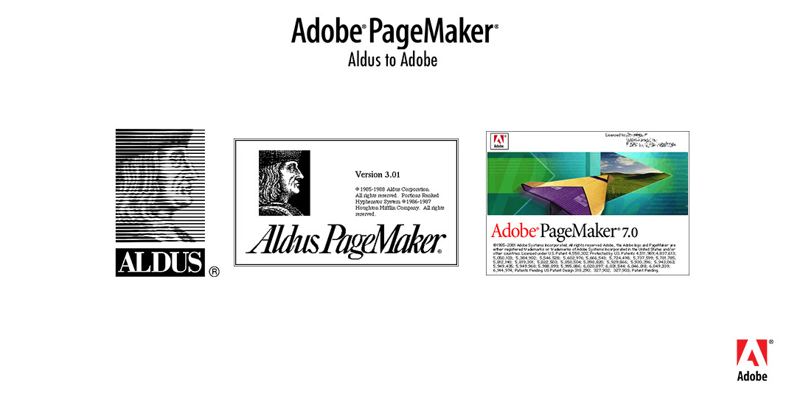
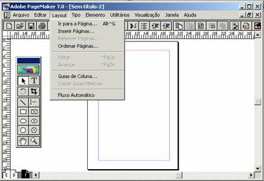
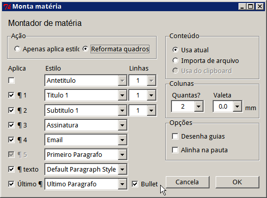
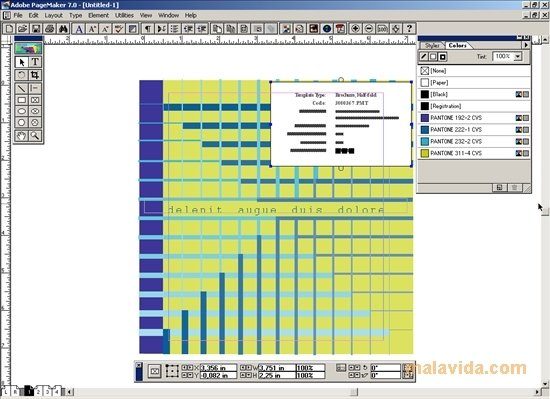
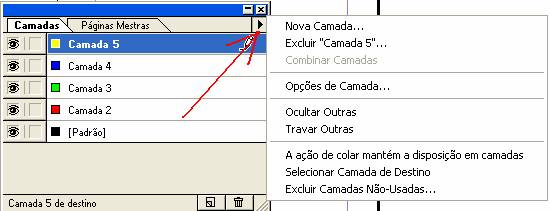
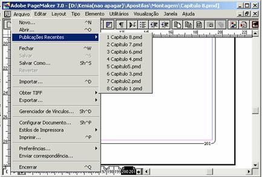
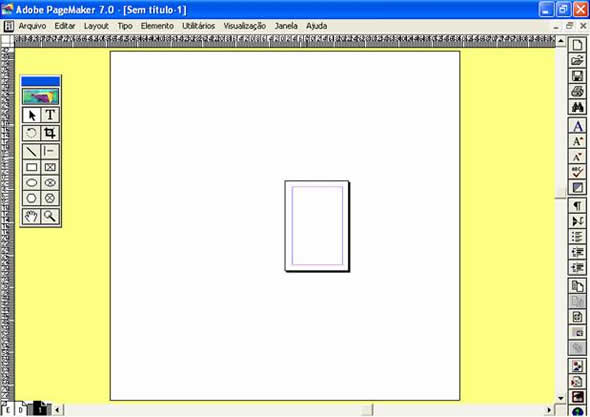
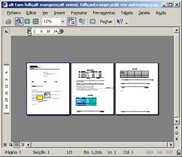
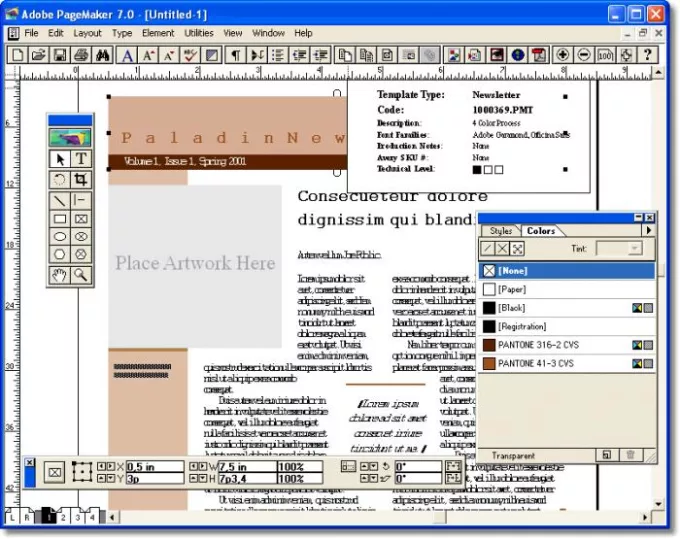
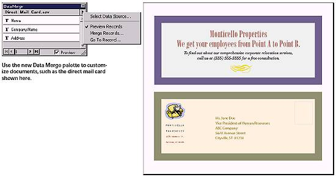

PageMaker
O PageMaker, também conhecido como Adobe PageMaker, foi um dos primeiros programas de editoração eletrônica (desktop publishing) desenvolvido para computadores pessoais. Ele desempenhou um papel crucial na revolução da publicação impressa e no design gráfico, permitindo que pessoas sem experiência em design pudessem criar documentos impressos com qualidade profissional. Se deseja conhecer mais sobre ele clique no botão abaixo!

1. Fundação: O PageMaker foi criado por Paul Brainerd e Mark Sundstrom, que fundaram a Aldus Corporation em 1984. Eles desenvolveram o software com o objetivo de simplificar o processo de criação de layouts e documentos para publicação, tornando-o acessível a uma gama mais ampla de pessoas.
2. Lançamento: Ele foi lançado pela Aldus Corporation em 1985 para a plataforma Apple Macintosh. Foi um dos primeiros programas a permitir que os usuários combinassem texto, imagens e elementos gráficos em um único documento, o que era uma tarefa complexa antes da era digital.
3. Revolução na Publicação: O PageMaker foi uma verdadeira revolução, pois tornou possível para pequenas empresas, profissionais independentes e mesmo amadores criarem materiais de alta qualidade, como boletins, panfletos, revistas e outros documentos impressos. Antes do PageMaker, essa tarefa geralmente exigia a contratação de designers profissionais e acesso a equipamentos de impressão caros.
4. Características Inovadoras: O software introduziu recursos inovadores para a época, como o uso de caixas de texto e ferramentas de layout intuitivas. Os usuários podiam arrastar e soltar elementos gráficos, redimensioná-los e ajustar a formatação do texto sem a necessidade de habilidades de programação ou design complexas.
5. Expansão para Windows: Após o sucesso inicial na plataforma Macintosh, o PageMaker foi lançado para o sistema operacional Windows em 1987. Isso aumentou ainda mais sua popularidade, já que agora estava disponível para uma base de usuários ainda maior.
6. Aquisição pela Adobe: Em 1994, a Adobe Systems adquiriu a Aldus Corporation e, com ela, o PageMaker. A Adobe continuou a desenvolver e aprimorar o software, integrando-o ao seu portfólio de produtos de design gráfico e publicação.
7. Sucessor: O PageMaker foi um software pioneiro, mas com o tempo, a Adobe decidiu encerrar seu desenvolvimento em favor do Adobe InDesign, uma ferramenta mais avançada e robusta para editoração eletrônica. O InDesign substituiu gradualmente o PageMaker como o principal software de design e layout.
5. Expansão para Windows: Após o sucesso inicial na plataforma Macintosh, o PageMaker foi lançado para o sistema operacional Windows em 1987. Isso aumentou ainda mais sua popularidade, já que agora estava disponível para uma base de usuários ainda maior.
6. Aquisição pela Adobe: Em 1994, a Adobe Systems adquiriu a Aldus Corporation e, com ela, o PageMaker. A Adobe continuou a desenvolver e aprimorar o software, integrando-o ao seu portfólio de produtos de design gráfico e publicação.
7. Sucessor: O PageMaker foi um software pioneiro, mas com o tempo, a Adobe decidiu encerrar seu desenvolvimento em favor do Adobe InDesign, uma ferramenta mais avançada e robusta para editoração eletrônica. O InDesign substituiu gradualmente o PageMaker como o principal software de design e layout.
O Adobe PageMaker tinha como principal função permitir a criação de documentos impressos com qualidade profissional através de uma interface amigável e intuitiva. Suas principais funções incluíam:
1. Layout de Página: O PageMaker permitia aos usuários criar layouts de página arrastando e soltando elementos, como texto e imagens, em um espaço de design. Isso possibilitava a organização de elementos gráficos de forma visualmente atraente e funcional.

2. Texto e Formatação: O software oferecia recursos para inserir e formatar texto, como criar caixas de texto, aplicar fontes, estilos e tamanhos diferentes, bem como alinhar o texto de acordo com as necessidades do layout.

3. Imagens e Gráficos: Os usuários podiam inserir imagens e gráficos em seus documentos, ajustar seus tamanhos, aplicar rotações e posicioná-los no layout.

4. Gerenciamento de Camadas: O PageMaker permitia criar camadas (layers) para organizar elementos do layout de forma mais eficiente. Isso era particularmente útil para controlar a sobreposição de elementos complexos.

5. Importação de Dados: Os usuários podiam importar dados de outras fontes, como planilhas ou bancos de dados, para serem incorporados em seus layouts.

6. Ferramentas de Desenho: O software incluía ferramentas básicas de desenho que permitiam a criação de formas simples e linhas diretamente no documento.

7. Pré-visualização de Impressão: O PageMaker fornecia uma visualização do documento como ele apareceria após a impressão, permitindo que os usuários avaliassem o layout e fizessem ajustes antes de imprimir.

8. Saída para Impressão: O software permitia a exportação dos layouts em formatos adequados para impressão profissional, como arquivos PostScript.

9. Integração com Outros Produtos Adobe: O PageMaker também oferecia integração com outros produtos da Adobe, como o Adobe Illustrator e o Adobe Photoshop, permitindo a criação de gráficos e imagens complexas que poderiam ser incorporados aos layouts.

7. Pré-visualização de Impressão: O PageMaker fornecia uma visualização do documento como ele apareceria após a impressão, permitindo que os usuários avaliassem o layout e fizessem ajustes antes de imprimir.
8. Saída para Impressão: O software permitia a exportação dos layouts em formatos adequados para impressão profissional, como arquivos PostScript.
9. Integração com Outros Produtos Adobe: O PageMaker também oferecia integração com outros produtos da Adobe, como o Adobe Illustrator e o Adobe Photoshop, permitindo a criação de gráficos e imagens complexas que poderiam ser incorporados aos layouts.
O PageMaker teve uma importância significativa na história do design gráfico e da editoração eletrônica. Aqui estão alguns dos principais aspectos que destacam sua importância:
1. Democratização do Design Gráfico: Antes do PageMaker, a criação de layouts e documentos para publicação exigia habilidades de design gráfico, acesso a equipamentos de impressão caros e frequentemente a contratação de profissionais. O PageMaker democratizou esse processo, permitindo que pessoas sem formação em design pudessem criar materiais de alta qualidade.
2. Facilidade de Uso: O PageMaker introduziu uma interface gráfica amigável e intuitiva, que possibilitava a criação de layouts de forma visual. Isso tornou o processo de design mais acessível e eliminou a necessidade de conhecimentos complexos de programação.
3. Transformação da Indústria Editorial: O PageMaker permitiu que pequenas empresas, autônomos e até mesmo indivíduos criassem suas próprias publicações, como boletins, panfletos e revistas. Isso desencadeou uma transformação na indústria editorial, pois as publicações não estavam mais restritas a grandes editoras.
4. Eficiência no Processo Criativo: O PageMaker agilizou o processo de criação e revisão de layouts. As alterações podiam ser feitas rapidamente, e as visualizações de impressão ajudavam a identificar problemas antes de enviar os materiais para a impressão.
5. Integração de Texto e Imagem: O software permitiu a integração perfeita de texto e elementos gráficos em um único documento, abrindo possibilidades criativas para a combinação de conteúdo visual e textual.
6. Aumento da Qualidade Visual: Com o PageMaker, layouts mais profissionais e atraentes podiam ser criados, melhorando a qualidade visual de documentos impressos. Isso também contribuiu para a reputação das empresas e organizações que usavam o software.
7. Pioneirismo na Editoração Eletrônica: O PageMaker foi um dos primeiros softwares a abordar a editoração eletrônica, um campo que posteriormente evoluiu para incluir ferramentas mais avançadas, como o Adobe InDesign. Ele estabeleceu os princípios básicos para muitos conceitos de design gráfico e layout que ainda são usados hoje.
8. Transição para o Digital: O PageMaker contribuiu para a transição da produção de documentos do meio físico para o digital. Ele ajudou a pavimentar o caminho para os métodos modernos de criação e distribuição de conteúdo, incluindo a publicação online.
Em resumo, o Adobe PageMaker desempenhou um papel crucial ao tornar o design gráfico e a editoração eletrônica mais acessíveis, eficientes e visuais. Ele abriu caminho para uma nova era na criação de documentos impressos e influenciou a maneira como as publicações são produzidas até os dias atuais.